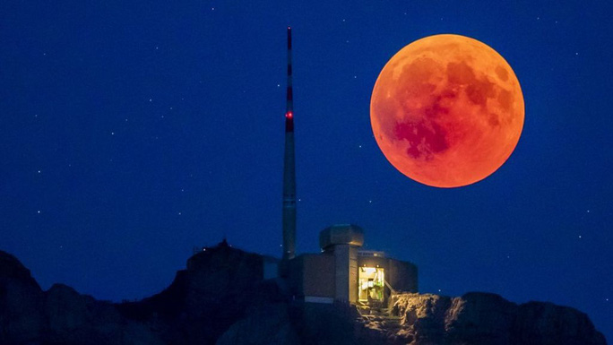
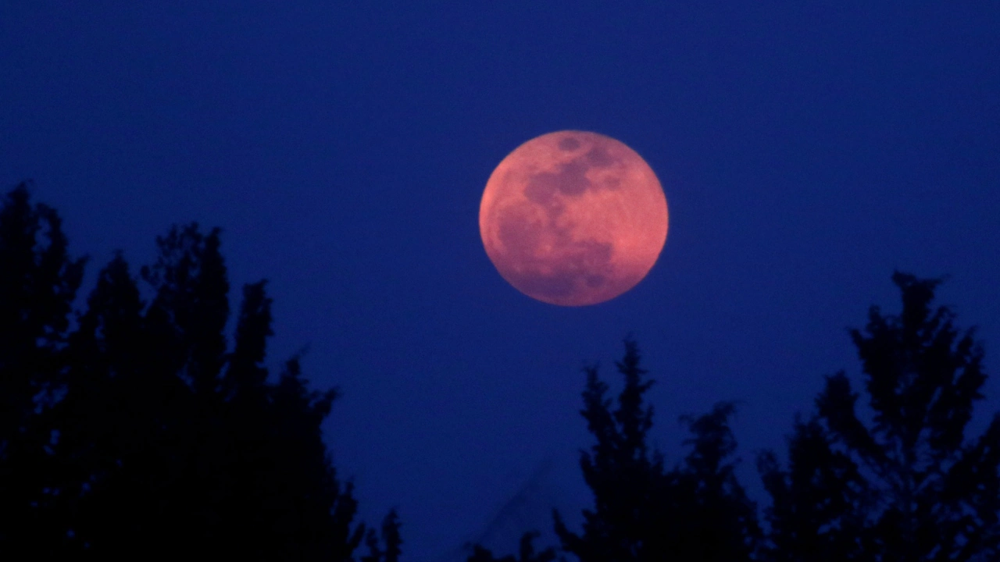

Những điều cần biết về hiện tượng nguyệt thực
Nguyệt thực là hiện tượng thiên văn khi Mặt Trăng đi vào hình chóp bóng của Trái Đất, đối diện với Mặt Trời. Điều này chỉ có thể xảy ra khi Mặt Trời, Trái Đất và Mặt Trăng thẳng hàng hoặc xấp xỉ thẳng hàng với nhau, với Trái Đất ở giữa. Do vậy, nguyệt thực chỉ có thể xảy ra vào những ngày trăng tròn. Kiểu và chiều dài của nguyệt thực phụ thuộc vào vị trí của Mặt trăng so với các điểm nút quỹ đạo của nó.
Nguyệt thực toàn phần
Nguyệt thực toàn phần xảy ra khi ánh sáng mặt trời trực tiếp bị bóng của Trái Đất che khuất hoàn toàn. Ánh sáng duy nhất nhìn thấy được là khúc xạ qua bóng tối của Trái Đất. Ánh sáng này có màu đỏ vì cùng lý do hoàng hôn có màu đỏ, do sự tán xạ Rayleigh của các tia sáng màu có bước sóng ngắn hơn. Bởi vì màu đỏ của nó, nguyệt thực toàn phần đôi khi được gọi là mặt trăng máu.
Phương pháp quang sát
Không giống như nhật thực, mà chỉ có thể được nhìn thấy từ một khu vực nào đó tương đối nhỏ trên thế giới, nguyệt thực có thể được nhìn từ bất cứ nơi nào ở nửa tối của Trái Đất. Nguyệt thực kéo dài trong vài giờ, trong khi nhật thực toàn phần chỉ kéo dài trong vài phút tại bất kỳ vị trí nào do kích thước nhỏ hơn của bóng của Mặt trăng. Không giống như nhật thực, nguyệt thực có thể quan sát một cách an toàn bằng mắt thường vì hình ảnh nguyệt thực mờ hơn so với hình ảnh mặt trăng đầy đủ.
Những lần xuất hiện nguyệt thực trong thời gian gần đây
Hiện tượng hiếm ngày 28/9/2015
Nguyệt thực xảy ra vào năm 2015 được giới thiên văn đánh giá thuộc loại siêu hiếm.
Không phải mọi người ai cũng có cơ hội chiêm ngưỡng nó. Khi các bài báo nói đến hiện tượng siêu hiếm này.
Thời điểm đó trên thế giới có đến 2 tỷ người có cơ hội chứng kiến hiện tượng “siêu trăng”.
Nó còn được kết hợp cùng nguyệt thực toàn phần.
Nguyệt thực 2017
Trên thực tế, năm 2017 xuất hiện nguyệt thực nửa tối vào ngày 10 đến ngày 11/2. Tuy nhiên, hiện tượng hiếm gặp này chỉ quan sát được tại bầu trời châu Âu, châu Á, châu Phi và một phần khu vực Bắc Mỹ mà thôi.
Nguyệt thực toàn phần 2018
Nguyệt thực khi xảy ra vào ngày 28/7 được coi là nguyệt thực dài nhất tại thế kỳ 21 này.
Hiện tượng này đã kéo dài trong một khoảng thời gian 5 tiếng. Nó bắt đầu từ 0 giờ 14 phút cho đến 6 giờ 28 phút của ngày 28/7.
Theo ghi nhận thì nguyệt thực toàn phần xuất hiện từ 2 giờ 30 phút cho đến 4 giờ 13 phút cùng ngày.
Việt Nam xuất hiện nguyệt thực năm 2019
Theo như ghi nhận thì nguyệt thực một phần
lần đó sẽ hiện diện ở hầu khắp khu vực trên thế giới.
Tại châu Á sẽ diễn ra tại vùng trung tâm có cả Ấn Độ và Việt Nam nữa.
Nguyệt thực đó đã diễn ra vào ngày 17/7/2019 với độ che phủ đến mức cực đại.
Đường kính đo được lên đến 0,653 có nghĩa là thời điểm cực đại đường tính tối đa chiếm 65.3%.